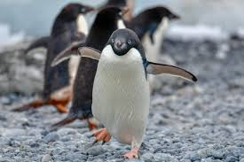

Overview
The Adélie Penguin (Pygoscelis adeliae) is a species of penguin common along the entire Antarctic coast. It is one of the most widespread and well-studied penguin species.
Key Facts
- Height: Around 70 cm (27 inches).
- Weight: 3.9 to 5.8 kg (8.6 to 12.8 pounds).
- Diet: Primarily krill, fish, and squid.
- Habitat: Antarctic coastline and surrounding islands.
Behavior and Nesting
Adélie Penguins are known for their strong swimming abilities and social behavior. They build nests out of stones and are highly territorial during the breeding season.